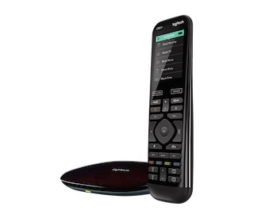
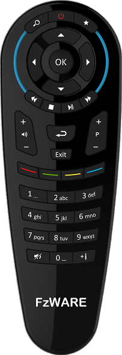

FzRemote try to make remote control easy by combine a physical universal remote control and a iPhone App.
Have you ever want to use your iPhone as the ultimate universal remote control?
There are some universal remote solution for iPhone but with drawbacks.
 |
Weak IR signal, 10 meter is a joke. It is difficult to watch iPhone screen and touch a button when iPhone must point to TV. No real button. |
 |
Complicated setup. Annoying power supply cable. No real button. |
|  | Almost perfect solution except the price and complicated setup |
Why real button matters
Just because your iPhone can become a remote doesn't mean it should.
Remotes are somewhat unusual devices in that they're specifically designed to be used by feel -- your thumb should be able to find buttons without you having to look at the device.
Because there are no physical buttons, remote apps always require you to look at them, making them a particularly poor substitute for the traditional remote experience. You're left shuffling your focus between two screens; you need to look at the remote app to press "up" on a virtual directional pad, then look at your TV to watch the cursor move. It ends up being clunky, slow, and eventually frustrating.
How it works
FzRemote App remote control the physical remote control via bluetooth. there are two use cases.
1. Put the physical remote control on a table, use it as a wireless IR blaster, then you can control your device with the App. The App also support siri, so you can even voice control your device.
2. Assign IR function to a physical remote control button, then you can control your device with the physical remote control.
By this way, Most frequently used IR function can be fast and conveniently accessed by physical remote control, seldom used IR function leave to App, thanks to the big screen find a IR function in the App is much easier than find a remote control. This combination provides much better remote control experience.
Nice looking remote control designed in Europe

How to get this remote
Qoo10 FzWARE Shop Only 19USD on early bird promotion.
If you have online influence please feel free to request a sample.
Online influence means a lot follower on blog, youtube, facebook, etc.
Other Supported Hardware
- CC2650RC

- CC2640R2 Launchpad
DIY BLE to IR Bridge

Visit ZRC github page for more info
Comments !